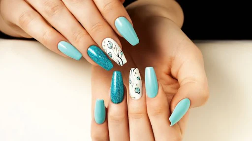
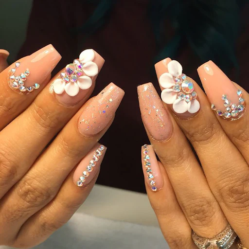

Uñas Semipermanente
¡Descubre el brillo y la durabilidad de las uñas semipermanentes! 💅✨ Disfruta de una manicura perfecta por semanas y luce unas uñas siempre impecables. ¡Atrévete a brillar con estilo! 🌟
Semipermanentes¡Luce unas uñas impecables y elegantes con uñas softgel! 💅✨ ¡Duraderas, naturales y perfectas para cualquier ocasión! ¡Dale a tus manos el cuidado que merecen! 🌟
SoftGel
¡Descubre el brillo y la durabilidad de las uñas semipermanentes! 💅✨ Disfruta de una manicura perfecta por semanas y luce unas uñas siempre impecables. ¡Atrévete a brillar con estilo! 🌟
SemipermanentesEs importante saber qué técnicas son las más demandadas en manicura, para intentar estar siempre al día de las novedades, cursos, tendencias y así aportar ese toque de innovación que caracteriza a una buena técnica.
Una de las técnicas más conocidas y usadas en construcción de uñas. Las técnicas que aplican esta modalidad tienen una sólida formación, puesto que no es fácil controlar la cantidad exacta de monómero y porcelana para crear una uña consistente.
Aunque existen otras modalidades de construcción, las acrílicas suelen ser muy respetadas por la durabilidad de las manicuras.
El dicho “para gustos los colores” define perfectamente la diferencia de usar una técnica de construcción en gel o acrílica. No existe una diferencia perceptible entre una u otra, pero dependiendo de la base formativa de la técnica y sobretodo de la época en la que se formó, que las uñas de gel serán su referente en reconstrucción.
No tienen la flexibilidad de las uñas de gel ni la consistencia de las acrílicas, pero su base de fibra de vidrio les da una mayor resistencia y durabilidad.
No obstante es una técnica costosa de mantener, por este motivo muchos salones no la ofertan por su alto coste.
Habitualmente esta técnica de colocar decoración en las manicuras de uñas se usan materiales en acrílico o gel. No obstante, la tecnología nos está ayudando a evolucionar y a poder ser más creativos sin tener habilidades exclusivas de diseño. Las impresoras en 3D nos permiten imprimir decoraciones o comprarlas ya hechas de una calidad similar a las creadas en acrílico.
Tiene una aplicación similar a cualquier esmaltado, salvo por algunas peculiaridades, como el curado en lámpara o la preparación de la uña. La calidad del esmaltado determinará el resultado, y un buen tratamiento de la uña antes de su aplicación marcará la diferencia.
Su duración está entre los 15 -21 días.
La manicura ha sido un elemento clave en la belleza y el cuidado personal a lo largo de la historia. No solo es una forma de embellecer nuestras manos, sino que también es una manera de expresar nuestro estilo y personalidad. Con el paso del tiempo, la manicura ha evolucionado, ofreciendo una amplia variedad de opciones para satisfacer los gustos y necesidades de cada individuo. Por eso, hoy queremos explorar los tipos de manicura que hay en la actualidad. Desde las clásicas y elegantes manicuras francesas hasta las creativas uñas acrílicas, descubriremos cómo cada estilo puede realzar nuestra apariencia y reflejar el estilo de cada persona.
Existen numerosos tipos de manicura que varían en términos de técnicas, estilos y resultados. A continuación, se presentan algunos de los tipos de manicura más populares:
La industria de la belleza está en constante evolución, y continuamente se desarrollan nuevas técnicas y estilos de manicura para satisfacer las preferencias y tendencias actuales. Otros estilos que existen son: